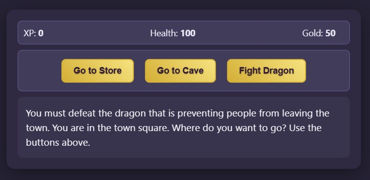
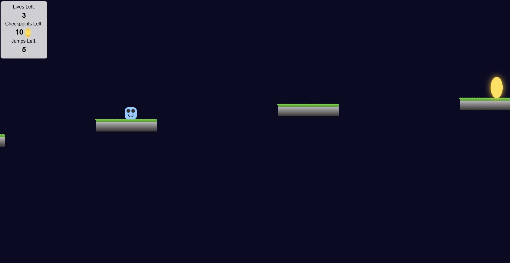
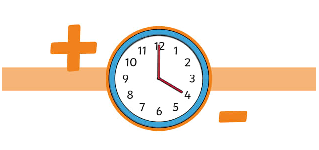
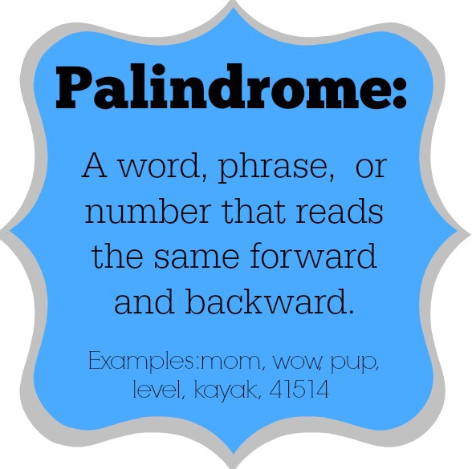

Embark on an epic adventure through a monster-infested cave in this action-packed RPG.
Battle a variety of creatures to gain experience, level up your hero, and collect gold along the way.
Spend your hard-earned loot in the store to upgrade your weapons and replenish your health. There is also a hidden easter (dragon) egg!

I developed a side-scrolling platformer featuring a dynamic checkpoint and respawn system.
The game tracks the evolving 'world state' at each checkpoint. When a player falls, they’re respawned into a version of the world that reflects the game's saved state.
This system ensuring resets feel seamless, immersive, and consistent with the gameplay progression.
This interactive web app allows users to search for Pokémon by name or ID.
It utilizes modern async/await syntax and the fetch API to retrieve real-time data from the API.
Upon searching, the app dynamically displays detailed character information—including stats, types, and an official sprite image.
Magic Eight Ball app that allows users to type a question into an input field and click a button to receive a random answer.
The app uses component state to handle the user’s input and randomly select an index to display one of the Magic Eight Ball answers.
I wrote a program to determine the approximate probability of drawing certain balls randomly from a hat.
Pass in a color and a quantity for each ball as arguments. You can randomly draw a certain number of balls.
You can also run probability experiments to see the likelyhood of selecting a certain set of colored balls from the hat.
I created an app that validates whether or not an input is a valid U.S phone number.
It checks against multiple regex patterns to ensure there are no alpha chars, symbols that don't belong, and no acceptable symbols with incorrect placement.
This app can handle deposits/withdrawls to a category and stores it on a ledger.
It displays the itemized ledger as well as a balance per category. You can also transfer funds between categories.
Lastly, it can print a chart that shows percent of spending by category.

I wrote a function that takes a start time, amount of time to add, and an optional day of the week.
It destructures the input into hours and minutes, adds the amount of time passed, converts back into a 12 hour format, and evaluates/calculates final time and day of the week.

This app recieves an input and cleans the text by removing symbols, spaces, and upper case characters.
It reverses the string and compares it to the cleaned input to validate if it is a palindrome.
In this creative front-end project, I explored how to use pure CSS to design and animate a city skyline composed entirely of styled building elements.
It uses CSS shapes, positioning, and background effects to build complex visual objects without relying on images or JavaScript.
One of the most engaging features of the project is its responsive behavior: when the browser window is resized, the scene transitions smoothly from day to night!